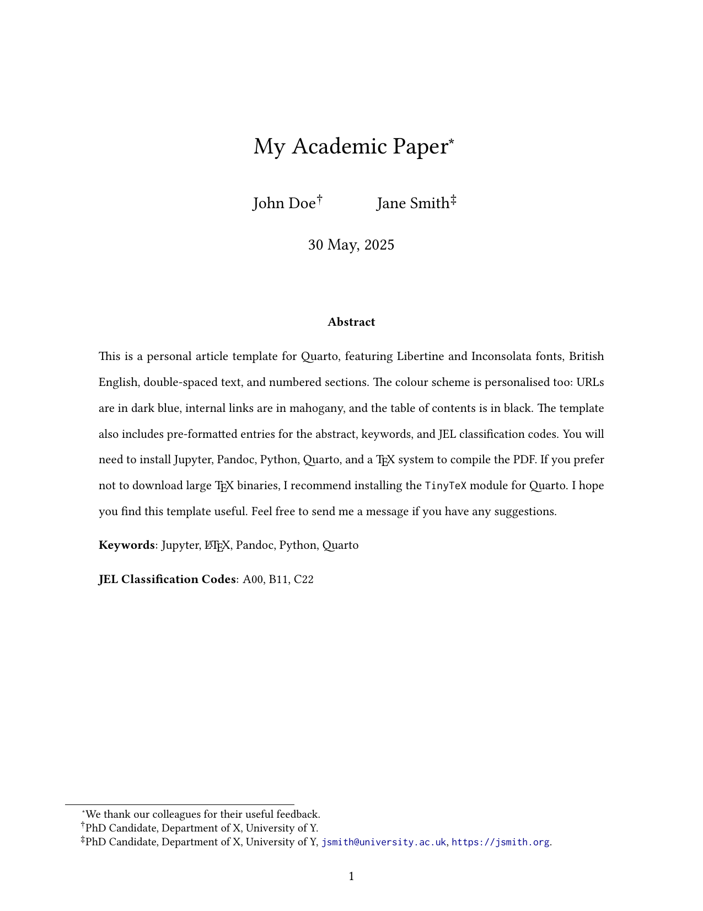

Quarto templates
A small collection of personal PDF templates for Quarto. They share one clean style: Libertine and Inconsolata fonts, British English spelling, coloured links, and generous margins.
Libertine + Inconsolata
British English
pdflatex
5 templates
The templates
Each template is a single .qmd file with a matching LaTeX layout. Click any preview to open the rendered PDF.
Aa
Libertine + Inconsolata
A warm serif for the body and a readable mono for code, used across every template.
EN
British English
Spelling, hyphenation, and date formats all set to lang: en-GB by default. Prefer American English? Just change it to lang: en-US.
↗
Coloured links
Dark-blue URLs and mahogany internal links and citations, easy to change in the YAML.
PDF
Render with pdflatex
Built for a standard LaTeX toolchain, and light enough to use TinyTeX.
Installation
You need Quarto, a LaTeX distribution, and (for the default kernel) Python with Jupyter.
- Quarto, version 1.3 or later
- A LaTeX distribution: TinyTeX (recommended) or TeX Live
- Python and Jupyter, for the default
jupyter: python3kernel
Prefer R? You can switch the kernel in one step: delete the jupyter: python3 line from the YAML header (that line is what tells Quarto to use Python), then install the quarto-r and rmarkdown packages. Quarto then renders the template with R, and you do not need Python or Jupyter at all.
Usage
Clone the repository and render any template you like.
git clone https://github.com/danilofreire/quarto-templates.git
cd quarto-templates/article
quarto render article.qmd --to pdfEdit the .qmd file to change the content, and adjust the YAML header to change the formatting (fonts, spacing, margins, colours). Each template carries its own .latex file that controls the PDF layout.
The letter template adds a few optional fields for a letterhead and a signature image:
letterhead: emory.png # path to letterhead image
letterhead-width: 7cm # image width
signature: /path/to/sig.png # path to signature image
signature-width: 5cm # signature image widthAll of these are optional. Leave them out and the letter renders with neither a letterhead nor a signature.
The templates are free to use and adapt. If you find them helpful, consider starring the repository; comments, issues, and pull requests are welcome